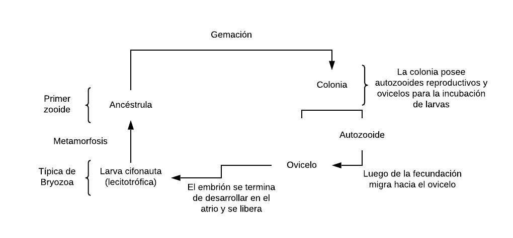

Estos grupos de animales comparten una estructura ciliada tentacular llamada lofóforo que sirve para la captura de alimento, aunque también se puede modificar en órganos de defensa, limpieza, entre otros. Asociado al lofóforo, se encuentra el epistoma, una estructura muscular de función alimenticia. Otra de sus características clave es tener una cabeza reducida y tubo digestivo en forma de U; habitan el fondo de ambientes acuáticos ( bentos), en su mayoría marinos.
Bryozoa, Brachiopoda, junto con Phoronida (clado de tan solo 13 especies), forman el grupo Lophophorata, un grupo monofilético ( Laumer C. E. et al., 2019). Este grupo de animales es celomado y se desarrolla por enterocelia. Una característica interesante es que su blastoporo origina al ano y la boca se genera secundariamente, en otras palabras, son “deuteróstomos”; sin embargo, pertenecen, en realidad, al grupo Protostomia. A continuación, las estadísticas respecto al número de especies de estos grupos de acuerdo a WoRMS:
Los Bryozoas comprenden 6 297 especies, de las cuales 103 no son marinas (WoRMS). Son coloniales sésiles en su fase adulta, la colonia recibe el nombre de zoario que puede llegar a estar formado por miles de zooides (usualmente de 0.5 mm). Los zoodies están conformados por una parte polípida (parte blanda) dentro de un cístido (pared, exoesqueleto, también recibe el nombre de zoecio) que puede ser suave (quitina) o calcificado (carbonato de calcio). El zoecio posee un orificio para la protrusión del polípido (función de alimentación y respiración).
De forma general, el polípido está formado por la corona (lofóforo), tubo digestivo, sistema nervioso simple y varios músculos. Dentro de la colonia, los zooides se comunican por funículos, los cuales se unen en el estolón. El funículo está formado por tejido mesenquimático y parte del estómago.
En estos organismos la difusión juega un rol crucial pues tanto la circulación como la excreción e intercambio gaseoso dependen enteramente de ella, esta se da principalmente a través del lofóforo. La mayoría de estos organismos es hermafrodita, los gametos se orginan en época reproductiva.
Se caracteriza por tener zooides con intercomunicación compleja comparada a Ctenostomatida. Algunos de sus subórdenes son:
Sus zooides son polimórficos y especializados, los que se encargan de la alimentación se conocen como autozooides y aquellos que tienen funciones distintas a la alimentación se llaman heterozooides; entre los heterozooides tenemos a los avicularios (se encargan de la defensa ante organismos que se quieran adherir a la colonia, el opérculo se transforma en una estructura similar a pico de ave, puede ser venenoso), vibracularios (se encarga de la limpieza de sedimentos que se depositan sobre la colonia, el opérculo tiene forma de cerda), ovicelos (tiene la función de incubar a las larvas) y kenozooides (tienen un rol estructural, aumentan la consistencia de la colonia).